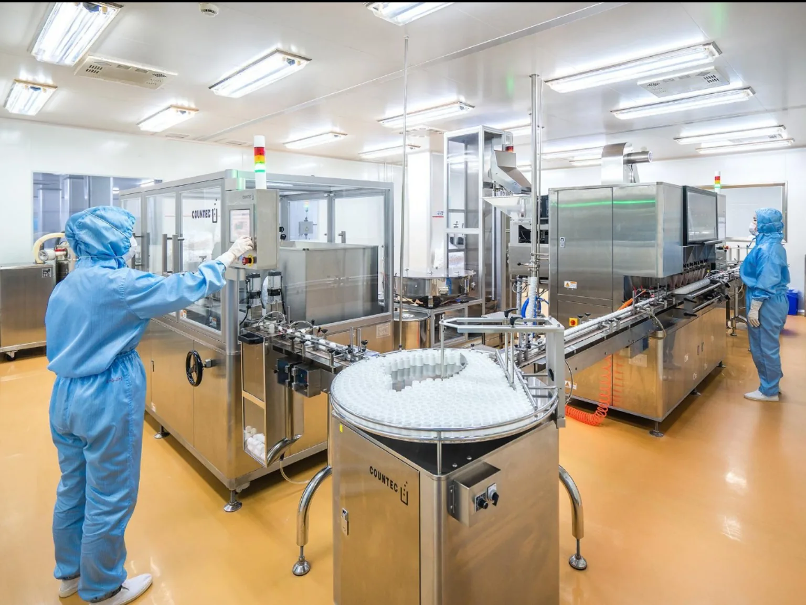
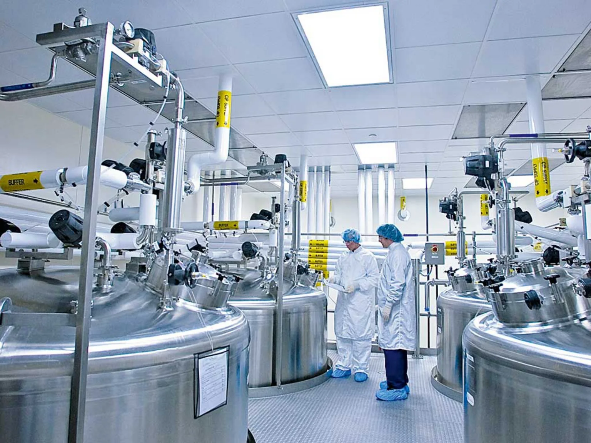

Confidence in every critical detail.
Helping pharmaceutical companies strengthen qualification, validation, regulatory compliance and inspection readiness through expertise, technology and innovation.

Specialist support for complex quality work.
Clear thinking, well-structured evidence and actionable support across the pharmaceutical quality lifecycle.
Qualification & Validation
A lifecycle-led approach to facility, utility, equipment and process qualification.
Explore service →002↗GMP Compliance
Practical support for quality systems, controlled documentation and sustainable GMP execution.
Explore service →003↗Inspection Readiness
Make evidence easier to find, explain and defend during customer or regulatory inspections.
Explore service →004↗Regulatory Services
Connect manufacturing evidence and quality documentation with regulatory expectations.
Explore service →005↗Sterile Manufacturing
Support contamination-control thinking across sterile facilities, processes and critical utilities.
Explore service →006↗Digital Quality & CSV
Build a risk-based foundation for compliant digital systems and automation.
Explore service →
Knowledge-led.
Evidence-based.
Quality decisions should be explainable, documented and proportionate to risk. We help teams translate requirements into practical actions and clear records.
Support across the full lifecycle.
From early readiness and qualification planning to ongoing compliance, digital quality and regulatory documentation, ValiStera connects the detail to the bigger picture.
Have a quality challenge
to solve?
Share your objective and current stage. We'll help define a practical next step.